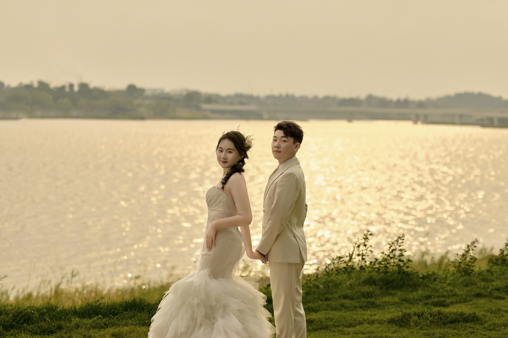
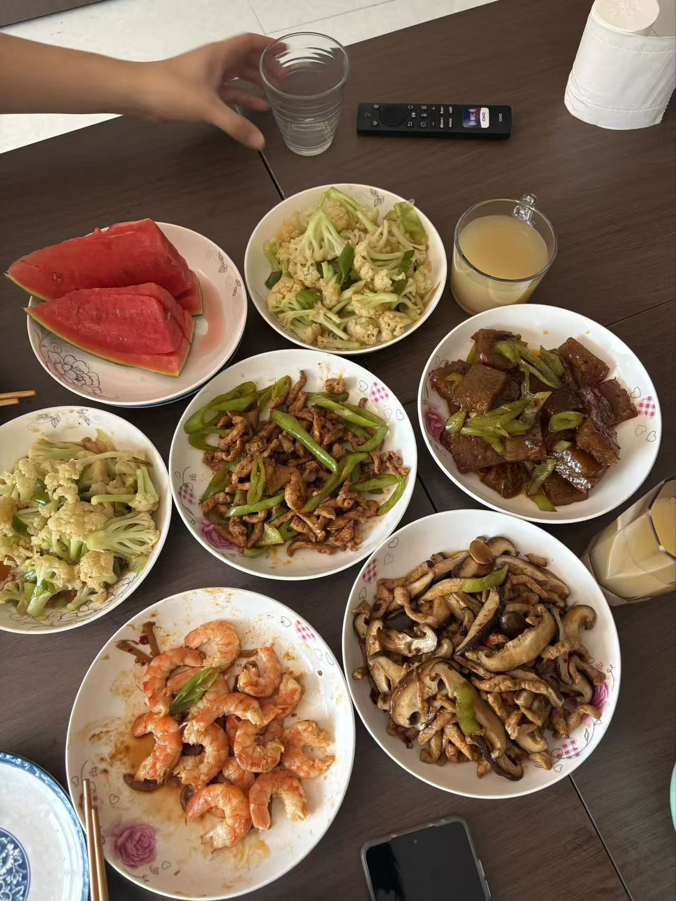
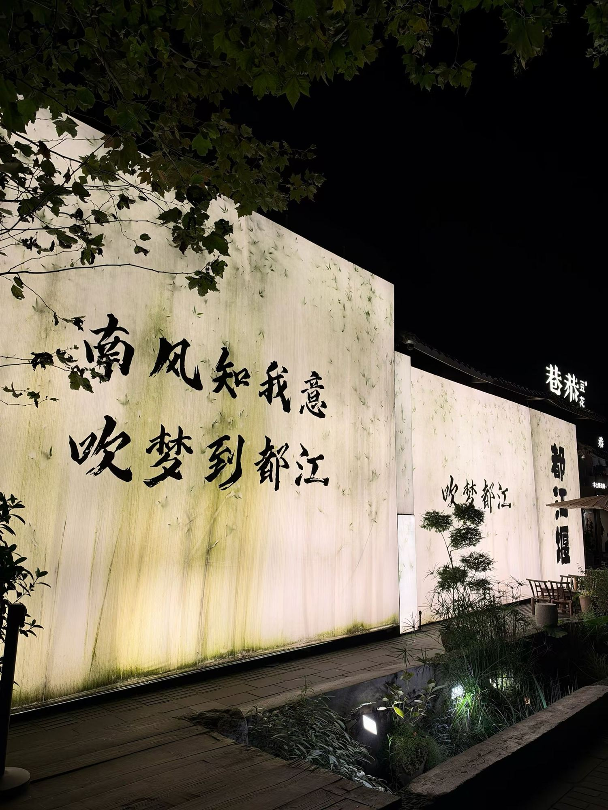

一起走过的路
下班后绕远的那条路，多出来的十分钟，是我们一天里最松的十分钟。

一整年，四季各来了一次，吵架、和好、加班、旅行，都算在里面。
数字很小，但每一天都是真的。
有些日子过去之后，才知道它是分界线。
没有仪式，没有宣言，只是忽然觉得——以后的事想先和这个人说。在我心里，从那天起晚安不再是一个词，而是一句爱彼此的约定。
婚礼那天很热闹，我记得的却是散场之后，我们忙完回家、躺在床上说「好累」的样子。那一刻我才明白，仪式只有一天，日子有很长。
我们可能没变成别人眼里那种完美的一对，但我们都还在原地，也还在往前走。这已经是我能想到最好的结果。
这一年过得不慢，也不算快。
我记得很多没什么用的小事：你穿着宽松衣服给我端饭那两分钟；吃饭时先把我爱吃的那一口夹过来；坐车睡着、头一点一点的样子；晚上我加班，你趴在窗户上等我留下印子，你半夜说外面下雨了要接我。这些都不值得发朋友圈，但它们差不多就是这一年的全部。
我其实不是会说话的人。可对着你，我总找不到恰当的词——好像所有现成的句子都轻了一点。
所以我做了这个网页。它比我本人会说话。
去年今天，我以为自己在开始一段恋爱。这一年走下来才发现，我是在开始一种生活：有人等我回家，有人陪我把琐碎的日子一件件摆平。累的时候不用解释，安静也不尴尬。
谢谢你愿意。
下一个周年，下下个周年，我还是会认真回答你每一次试探，也会在你不安的时候，一遍遍告诉你：我在呢，杨嘉欣。
——晚了一天给你的老公
没有哪一天特别了不起，加起来才了不起。
下班后绕远的那条路，多出来的十分钟，是我们一天里最松的十分钟。

我做饭你洗碗，因为你不会。厨房那盏灯，是这一年的底色。

睡不着的时候聊很久，把白天没说完的话说给夜里听，第二天照样早起。
这封信我改了三遍，前两遍都写得像工作总结，删到最后，只剩下一些不敢当面说的话。
其实去年那天，我说「我们试试看」的时候，心里想的是——试试看能不能过一辈子。
现在第一年过去了，我大概知道了答案。